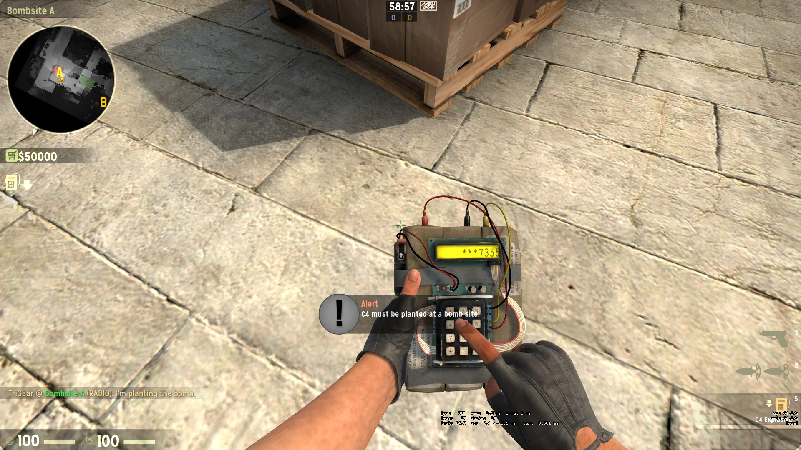
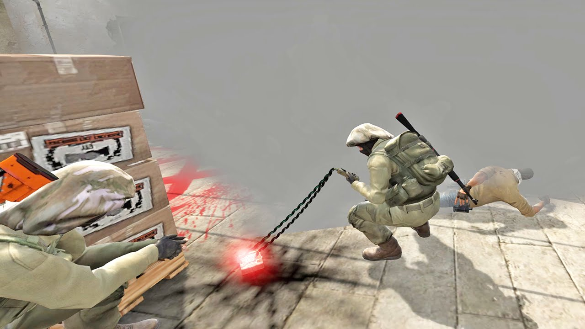

Counter-Strike Global Offensive
Miről szól a játék?
Ez egy akció játék amiben két, ötfös csapat lövöldözik egymásra, a terroristák és a terror-elhárítók a pályán található két bomba lerakó hely A és B. A terrorista csapatnak át kell venni, ugymond be kell törni valamelyik lerakó helyre ezután le kell helyezni a kijelölt helyre a bombát.

Ezt meg kell előzniük a terror-elhárítóknak vagy hatástalanitani a bombát.
